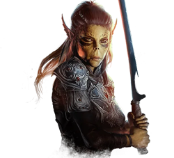
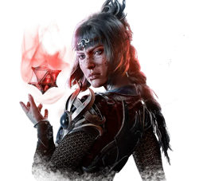
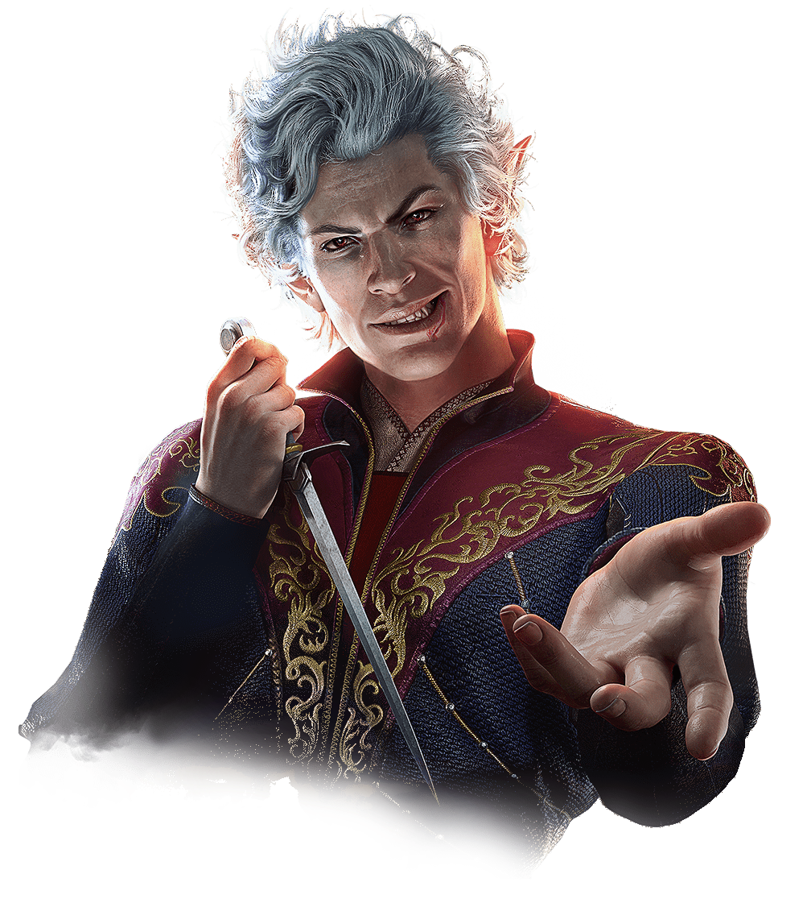
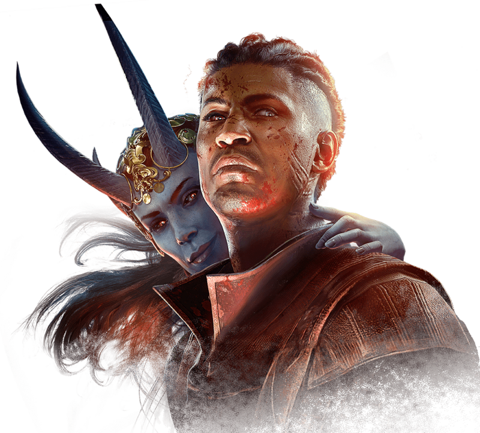
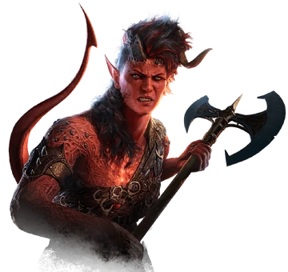
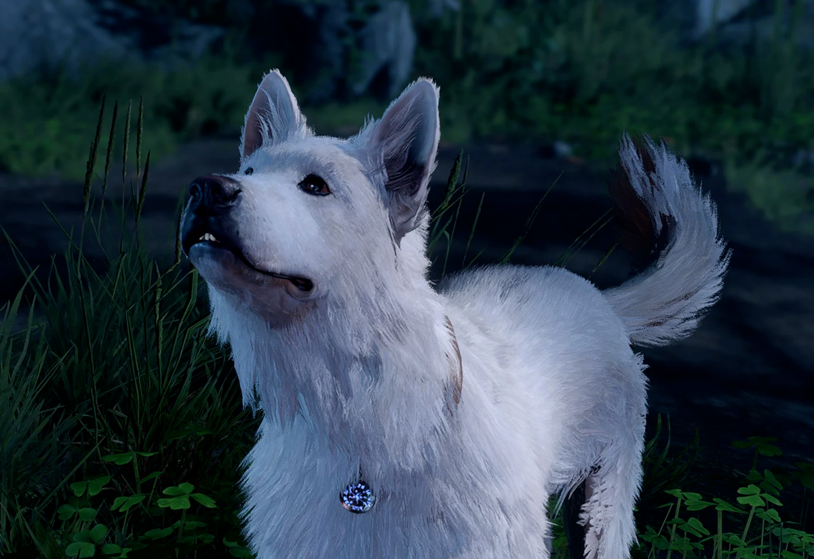

Baldur's Gate 3 A Dungeons and Dragons open world adventure game
what bg3 is
words
characters and there greeting
The game has six characters you will meet on the way that can become part of your team.
You also have the option to leave them behind, though it's best to bring them on your adventure as they can be helpful.
Lea'zel

Voice Line Lae'zel is the first character that you meet in the ship, She is a Githyanki, and her class is a fighter.
Lea'zel is very stern and always wants to stay on track. She doesn't 100% trust you, or really anyone.
She's more likely to trust you if you made your character also a Githyanki.
Shadowheart

Voice Line words about them
Astarion

Voice Line words about them
Wyll

Voice Line words about them
Karlach

Voice Line words about them
Scratch

words about them
Quote and related to class/learned
favorite things